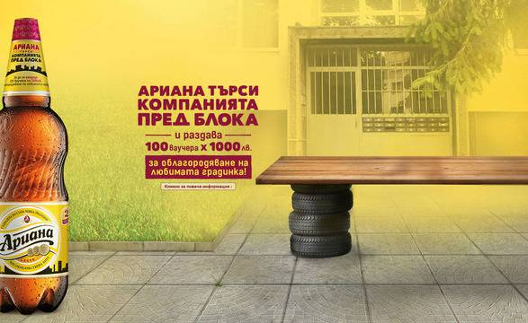

| Вид пиво | Алкохолна стойност и градус | |
|---|---|---|
| „Ариана-светла бира “ | 10° P и алкохолно съдържание 4,5 % об | „Ариана-тъмна бира “ | 13° P и алкохолно съдържание 5,5 % об |
Характеристика и асортимент
Ариана е висококачествена лагер бира, основните съставки на която са ечемичен малц, вода, хмел и мая. Отличава се със светлозлатист цвят, умерена карбонизация, свеж вкус, с лек аромат на малц и хмел. Предлага се на пазара в стъклени бутилки от 0,5 л., като и в PET-бутилки от 1 и 2 л. От февруари 2009 г. „Ариана“ е с иновативна ring pull технология за отваряне. От 2011 г. бирата се предлага на пазара в нова стъклена бутилка.